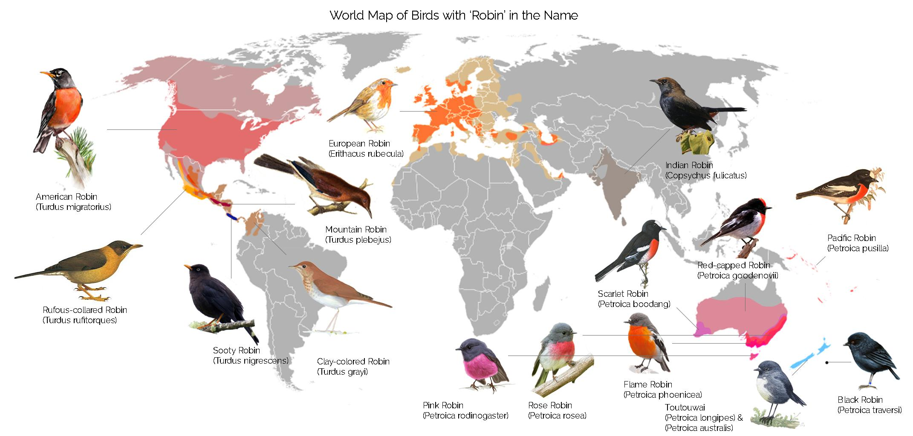
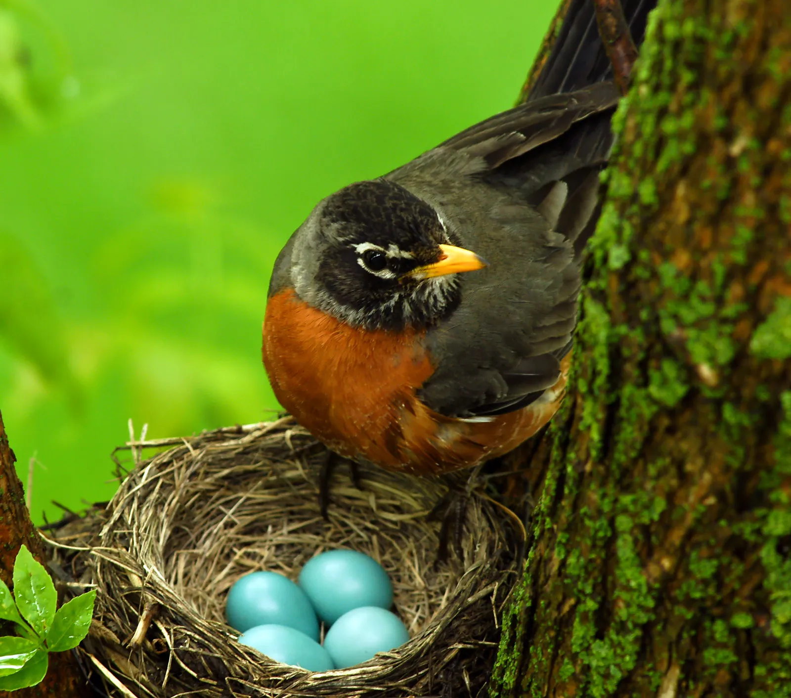

Description
The robin (scientifically known as Erithacus rubecula) is a small, migratory bird commonly found in Europe, parts of Asia, and North Africa. Recognizable by its distinctive red breast, the robin is often associated with the arrival of spring and is a symbol of renewal and cheerfulness in various cultures. Robins are part of the thrush family and are known for their melodious song, which can often be heard year-round.
Robins are typically around 10–15 cm in length, with a slender body and long legs, allowing them to hop along the ground in search of food. Their diet consists mainly of insects, worms, and berries, making them valuable in controlling pest populations. Robins are also known to be territorial, especially during the breeding season, when they defend their area from other robins and birds.
Although they are primarily ground feeders, robins are quite adaptable, and they can also be seen perched on branches or fence posts. The robin is a common sight in gardens, parks, and woodlands, and its friendly demeanor and striking appearance make it a favorite among bird watchers. The robin's vibrant red chest has earned it a place in many folk stories, symbolizing hope and joy throughout history.

Habitat
Robins (Erithacus rubecula) thrive in woodlands, gardens, parks, and hedgerows, often near human settlements, where it can find ample food sources. Robins are adaptable and can live in both urban and rural areas, preferring environments with dense vegetation that provide cover and opportunities for foraging.
In forests, they are typically found in the understory, near shrubs or low trees, where they can easily hop along the ground in search of insects, worms, and berries. They also frequent areas with a mix of open ground and cover, such as gardens and farmland, as these offer a good combination of food and safe nesting spots.
Robins are territorial birds, especially during the breeding season, and they often establish their nests in sheltered spots like thick bushes, tree branches, or even in cavities in walls or buildings. They are highly resilient and can adjust to various climates, migrating in winter to milder regions or remaining in their habitat if the weather is not too harsh. Overall, the robin's habitat preferences reflect its need for food, shelter, and suitable nesting sites.
Diet
The robin (Erithacus rubecula) is an omnivorous bird with a diet primarily consisting of insects, worms, and other invertebrates, especially during the spring and summer months. These ground-feeding birds are adept at foraging, often hopping along the forest floor, gardens, and grassy areas to catch their prey. Earthworms are a significant part of their diet, particularly in the colder months when other food sources are scarcer. Robins use their keen sense of sight to locate worms and insects beneath the soil surface.
In addition to invertebrates, robins also consume a variety of fruits, berries, and seeds. In autumn and winter, when insects are less abundant, they turn to more plant-based foods such as berries from holly, elder, and ivy. During these colder months, robins may also feed on small seeds or even foods left by humans, such as crumbs or suet.
While they primarily forage during the day, robins may also take advantage of food scraps left in gardens or on bird tables. Their diet is highly seasonal, with a shift from animal-based foods in warmer months to more fruit and seeds in winter. This flexibility in diet helps robins survive in a variety of habitats throughout the year.
Their Life
The robin (Erithacus rubecula) typically has a lifespan of around 1 to 2 years in the wild, though some individuals can live longer, with the oldest recorded robin reaching over 10 years. The life cycle of a robin begins when a female lays 4 to 6 eggs in a nest made of grass, moss, and feathers, usually built in dense shrubs, hedgerows, or even in cavities such as wall spaces. The eggs are incubated for about 12-14 days, with both parents sharing the responsibility of keeping them warm.
Once hatched, the chicks are fed primarily on invertebrates like worms and insects by the parents. The young robins fledge, or leave the nest, about 13-15 days after hatching. However, they remain dependent on their parents for food and protection for a few more weeks.
Robins are sexually mature at about one year of age and begin breeding in early spring. They typically have one or two broods per year, although some may attempt to breed a third time if conditions are favorable. Their first breeding season can be challenging, as many robins do not survive their first year due to predation, accidents, or food scarcity. Despite this, robins can be prolific breeders and play an important role in local ecosystems.